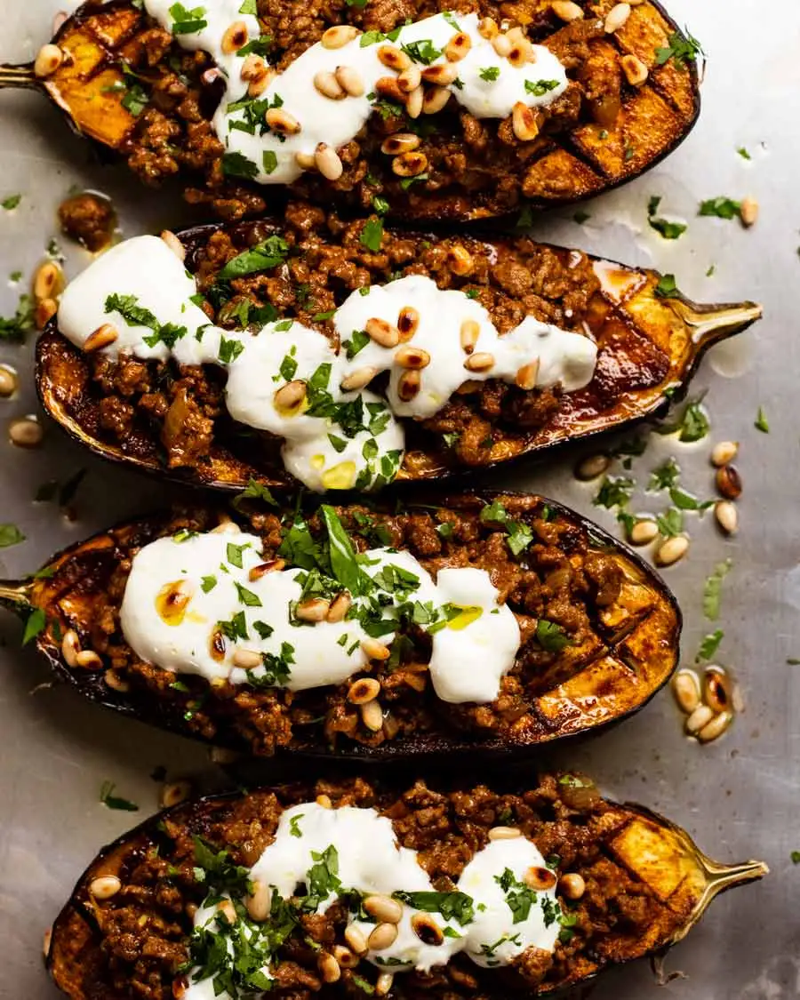

Morrocan Stuffed Eggplant

Description
Think of this as a mid-week take on traditional stuffed eggplant
dishes you find in Arabic cuisine that involves hollowing out eggplants,
stuffing with rice, meat, herbs and nuts, often baked in a tomato sauce.
Sounds magnificent, doesn’t it? And it is.
Ingredients
- 2 x 250g/8oz eggplants (aubergines)
- 3/4 tsp cooking salt / kosher salt
- 1 tbsp extra virgin olive oil
- 1 tbsp lemon juice (or more oil)
- 1 1/2 tsp EACH coriander, paprika
- tsp cumin
- 3/4 tsp all spice powder
- 1/2 tsp EACH garlic powder, ginger, turmeric powder
- 1/4 tsp cinnamon
- 1/4 tsp cayenne pepper
- 1 tbsp olive oil
- 1 garlic clove , finely minced
- 1/2 onion , finely chopped
- 250g / 8oz beef or lamb mince , lean if you can (chicken, turkey, pork also ok)
- 1/2 tsp cooking/kosher salt
- 2 tsp tomato paste (Note 3)
- 1/4 cup water
Steps
- Preheat oven to 180°C/350°F (160°C fan).
- Sweat eggplants (recommended, see Note 5 to skip) – Cut eggplants in half then score with 2.5cm / 1" diamonds. Rub surface with salt, getting some into the slits. Place face down in a colander and set aside for 30 minutes. Gently squeeze like a sponge to remove excess water, pat surface dry.
- Mix Chermoula spice mix ingredients in a bowl. Remove 3 teaspoons for the meat and set aside. Add olive oil and lemon juice into the remaining spice mix and mix into a paste.
- Roast eggplant – Place eggplant on baking tray. Slather spice mix onto the surface. Roast for 45 minutes until softened.
- Spiced topping – Heat oil in a non stick skillet over medium high heat. Cook onion and garlic for 1 minute. Turn heat up to high, add lamb/beef and cook, breaking it up as you go, until you no longer see red. Add reserved spices and salt, then cook for a further 1 minute. Add tomato paste and cook for 1 minute. Stir in water, cook for 1 minute until it's juicy but not watery.
- Assemble – Top eggplant with beef/lamb. Sprinkle over coriander, dollop with yogurt and pine nuts. Finish with an extra drizzle of extra virgin olive oil, if desired!